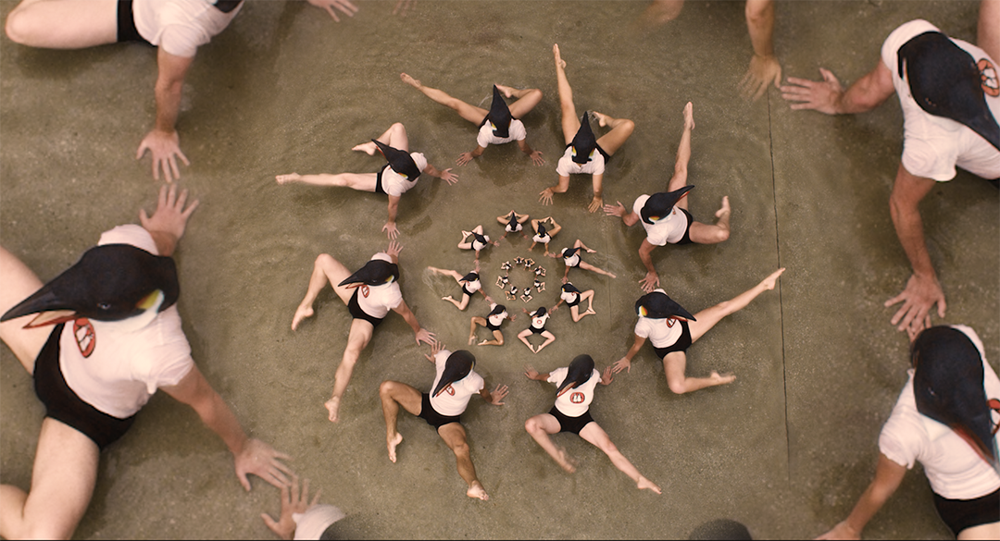

Cafe Au GAZE
Monday 5th August

Location TBC | 11:30
Join us on Saturday, Sunday and Monday mornings of the festival for Café au GAZE, where we will invite attending artists, filmmakers and industry professionals of the festival to talk about their practice and to share behind-the-scenes stories from their work. Each morning will be hosted by a local LGBTQIA filmmaker and Festival Director Greg Thorpe. This series is not to be missed by the artists, the film lovers and those of us who love to hear the gossip
A Different Country
Monday 5th August

Irish Film Institute | Cinema 1 | 13:00
Dir. Edmund Lynch / Ireland / 2016 / 1hr 14m
“I was out to tell people's histories, and what life looked like to them.” We honour our departed friend, activist, broadcaster and filmmaker,
Edmund Lynch with a special commemorative screening of his landmark documentary A Different Country. The film recalls the humble but committed
beginnings of an emerging gay rights movement, from a small meeting in October 1973 'David Norris late as usual!' to decriminalisation and
the blossoming LGBTQIA movement in Ireland today. The film premiered at GAZE in 2016 and it seems only right to revive it again today. Ed Lynch's pivotal
role in the movement is the legacy of a lifetime, and this time capsule historic documentary we hope is a fitting tribute to his memory.
We are honoured to present this screening with our Festival Friends, of whom Ed was a proud member, and we welcome anyone who would like to remember
Ed's life and work with a few words after the screening.
PRE FEATURE SHORT: Stonewall Postal Action Network
Sarah Elizabeth Drummond / UK / 2023 / 12m
Austin Allen ran one of the UK's largest postal LGBT action networks from his bedroom in the 1990s.
Writer: Sarah Elizabeth Drummond
Producer: Sarah Elizabeth Drummond
Resistance Shorts
Monday 5th August 2024
Light House Cinema | Screen 3 | 12:30
1hr 22m
You'll find a theme of resistance and antifascism running throughout most of the GAZE programme this year. It's become a
dominant theme in contemporary queer films, from grief in the face of losing our homes, our rights and our loved ones, to
righteous anger at the violence inflicted on us by right-wing extremists and politicians.
The three films in this programme are a snapshot of this bigger picture, capturing three acts of resistance from three
different people caught in seemingly inescapable oppressive structures, from the smallest gestures of love to the most
daring acts of survival.
The Return
Vadim Mochalov/ Ukraine/ 2023/ 32min
Nikita is ready to give up on his conservative religious mother when explosions rock Kyiv, suddenly entangling Nikita's
fractured faith with his survival and the survival of his mother, who hasn't picked up the phone since the war broke out.
Written and Produced by: Vadim Mochalov
The Performance
Claire Zhou/ Netherlands/ 2023/ 20min
Lin has two great loves: her trans daughter Tan, and the church in which she's a chorister. But on the eve of Lin's
solo performance, rumours about Tan start spreading in church, and Lin must decide how much of her love to truly show.
Written by: Claire Zhou
Produced by: Dennis Cornelisse, Alex Doff, Sabine Brian
Piecht
Luka Lara Steffen/ Germany/ 2023/ 30min
When Johanna is begrudgingly whisked to a rural idyll, she's trapped in something much worse than a boring holiday.
Veiled hatred presses in from all sides, but the more Johanna resists, the harder this eco-fascist nightmare tries to crush her.
Written by: Luka Lara Steffen
Produced by: Sophia Lorena Gamboa Huamán
Reas
Monday 5th August
Light House Cinema | Screen 2 | 14:30
Dir. Lola Arias / Argentina, Switzerland, Germany / 2024 / 1hr 22m
Filmed inside an abandoned prison in Buenos Aires, Reas employs a cast of formerly incarcerated people to dramatize the
struggles of their lives - before, during, and after prison. Nominated for Best Documentary at the Berlinale Film Festival,
Reas sits outside of such strict categories, inviting survivors of the system to re-configure their lives through a fictional
narrative based in truth. Oh, and it's a musical too. With romance. And voguing.
Cis and trans women, straight and queer, and one trans man starting a rock'n'roll band, all struggle and celebrate, keeping
dignity and hope intact in the face of a crushing prison system. Over a decade in the making, Reas is an abolitionist film at
its core, completely original, and a resolutely queer project - transgressive, and uplifting.
Producers: Gema Juarez Allen, Clarisa Oliveri, Ingmar Trost
Pre Feature Short: Club Chrome: Fxckery
Arundati Thandur / Australia / 2023 / 13m
Following Club Chrome, Australia's first LGBTQIA pole dance collective, in the months leading up to the Sydney World Pride
premiere of their dynamic, high-production pole dance performance showcasing artists within the intersections of Sydney's
LGBTQIA, BIPOC, and sex work communities: Fxckery.
Writer: Arundati Thandur
Producers: Arundati Thandur, Casey Ventura
Photo Booth
Monday 5th August

Light House Cinema | Screen 1 | 15:30
Dir. John Greyson / Canada / 2022 / 1hr 53m
Recounting fifteen years of passionate activism in Toronto and worldwide, Photobooth juxtaposes a surreal
operatic narrative with documentary scenes that explore LGBT Pride and pink-washing, gay soldiers and
homonationalism, Queers Against Israeli Apartheid, and the accelerating weaponisation of anti-Semitism.
Outraged by the latest bombing of Gaza, Palestinian queer activists Hamza and Walid recruit queer novelist
Jean Genet to help them sabotage the Eurovision song contest in Jericho.
The emergence of queer BDS (boycott, divestment, sanctions) as a dynamic Palestinian-led global movement is
brought to vivid life through interviews and actions, opera and agitprop, protests and pranks. Queer activists
Ghadir Shafie, Judith Butler, Ali Abunimah, and others recount the victories and setbacks of this emerging social justice movement.
Writer: John Greyson
Producers: Anneli Ekborn
Pre Feature Short: Sultana's Reign
Hadi Moussally / France / 2023 / 10m
A Palestinian drag queen reflects on her journey from the Middle East to New York. Sultana discusses the
challenges of performing drag in conservative societies, her nostalgia for Egyptian cinema icons, and her
struggle for self-expression.
Writer: Hadi Moussally
Producer: h7o7Studio
Close To You
Feature + Closing Gala
Monday 5th August
Light House Cinema | Screen 1 | 20:00
Dir. Dominic Savage / USA, UK, Canada / 2024 / 1hr 40m
Elliot Page gives a delicate but defiantly star turn in his first feature role as a trans man since coming out in 2020. Sam (Page)
is facing a nerve-shredding experience familiar to many queer people - returning home to a family occasion after a period of estrangement.
What begins as a gentle reunion drama soon unravels, and in his time-out from familial stresses, Sam runs into a former hometown lover,
Katherine, played by the brilliant Hillary Baack.
The nostalgia of their younger days threatens to sweep them both away, but the world has changed and so have they. Close To You's
improvised script and close co-production with the actors and director Dominic Savage is a model of queer filmmaking that lends the
piece an intimate natural realism that is such a deep pleasure to sink into. Page is a star for his time and this film seems a perfect
way to close out our festival and welcome in another new era in LGBTQIA cinema. See you at the Closing Gala.